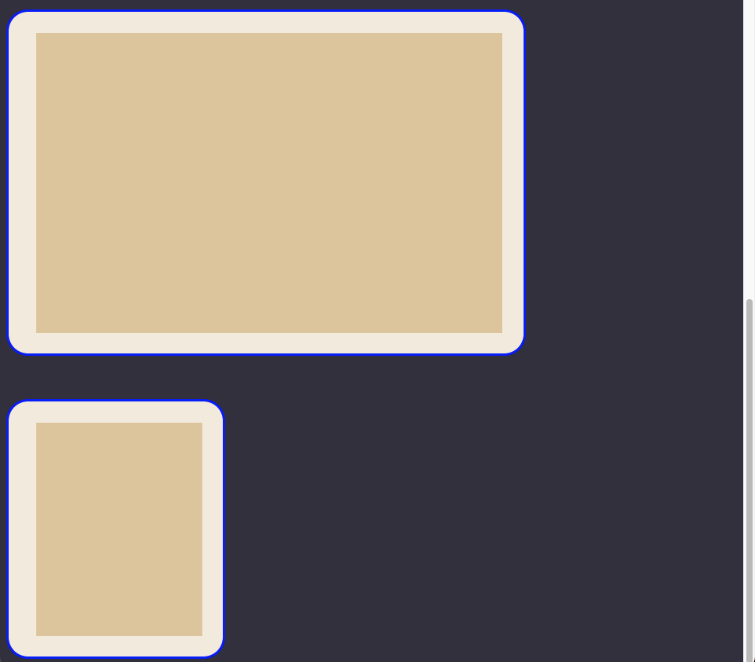

CSS Haftalık Ödev
1. Görev
Listenin üçüncü elemanının "üçüncü" yazısı,
liste elemanıyla aynı renkte olmalı
ama renk kodu kullanarak yapılmamalı. Bu listenin HTML kodu üzerinde
değişiklik yapılmayıp sadece "style.css" dosyası ile ayarlanmalı.
(Burada CSS'te specificity (keskin belirtme) ve inheritance (miras
bırakma) özelliklerinin ikisini birden kullanmamız gerekiyor)
- Listenin ilk elemanı
- Listenin ikinci elemanı
- Listenin üçüncü elemanı
- Listenin dördüncü elemanı
- Listenin beşinci elemanı
2. Görev
CSS'te inheritance için kullanılan değerleri bu yazının altındaki "ul"
listesinin içerisinde listeleyip ne işe yaradıklarını açıklayalım.
("değer" derken kastettiğimiz mesela "width: 200px" tanımındaki "200px"
kısmı)
4 adet değer yazabiliriz. Videolarda anlatılan üç değer haricinde bir
değer daha var, onu da listeye ekleyelim.
("css inheritance" şeklinde Google'dan arama yapabiliriz)
- inherit: Bu değer, bir özelliğin değerini üst öğeden miras almasını sağlar.
Örneğin, bir "div" öğesine uygulanan font rengi stilini, bu "div" içinde bulunan bir "p" öğesine de
miras almasını istiyorsanız, "p" öğesindeki font rengi stilini "inherit" olarak belirtmeniz gerekir.
- initial: Bu değer, bir özelliğin varsayılan değerine geri dönmesini sağlar.
Örneğin, bir öğeye uygulanan font rengi stilini varsayılan değere döndürmek istiyorsanız,
"initial" değerini kullanabilirsiniz.
- unset: Bu değer, bir özelliğin miras aldığı değeri sıfırlar ve bu özelliğin
yeniden belirlenmemiş olmasını sağlar. Örneğin, bir öğeye uygulanan font rengi stilini önce miras
aldığı değere geri döndürmek, sonra da yeniden belirlemek istiyorsanız, "unset" değerini
kullanabilirsiniz.
- noninheritable: Bu değer, bir özelliğin miras alınmayacağını belirtir.
Yani, bir özelliğin üst öğeden miras alınmasını istemiyorsanız, bu değeri kullanabilirsiniz. Ancak, CSS'te
doğrudan böyle bir değer bulunmadığı için, "inherit" veya "initial" gibi alternatif
değerler kullanılır.
3. Görev
-
600 piksel genişliği ve 400 piksel yüksekliği olan, arkaplan rengi
#F4EEE0 olan, 3 piksellik mavi renkte kenarlığı olan bir "div"
oluşturalım
-
Hemen altına 50 piksel dışarıdan aralık bırakarak %30 genişlikte ve
300px yükseklikte olan, yine aynı kenarlık ve arkaplan rengine sahip bir
div oluşturalım
-
İki div'e de ana elementin (root element) font büyüklüğünün 1.5 katı
kadar içeriden boşluk verelim ama sol taraftan verdiğimiz boşluklar özel
olarak ana elementin font büyüklüğünün 2 katı olsun
-
Bu boşluğu verdikten sonra div'in boyutları sabit kalsın, boşluk
verdiğimiz için dışarıya doğru büyümesin. Bunu kolayca yapmamızı
sağlayan, tüm elementlere evrensel bir şekilde etki eden özel css
kodumuzu yazalım
-
İçlerine arkaplanı #E1CDA3 renginde olan, 100% genişlik ve yükseklikte
olan birer div koyalım
- Dıştaki div'lerin kenarlıklarına 25 piksellik yuvarlatma yapalım
-
Aynı kodları farklı farklı elementler için tekrar tekrar kullanıyorsak o
kodları tek bir class'a taşıyalım ve o elementlerde ortak bir şekilde
kullanalım. Ufak tefek farklılıklar varsa o kodları o elemente farklı
bir şekilde (farklı bir classla veya id kullanarak vs.) verelim
Elde etmek istediğimiz görünüme örnek:

*Alttaki kutu 30% genişlikte olduğu için ekran boyutuna göre değişiklik
gösterir.